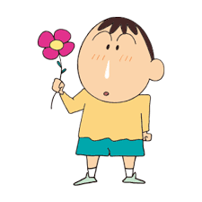

簡單的介紹此作品的人物
是個五歲的幼稚園兒童，本作大多是敘述他滑稽無厘頭的行為

總是流鼻涕，但是他的鼻涕非常特別，可以伸縮自如
常自稱春日部防衛隊隊長，一星期幾天有上英語補習班習慣
前期個性文靜婉約，但中後期後個性逐漸強勢霸道，唯對於小新前往她家蹭吃蹭喝的行為毫不在意。
個性膽小且很聽話，疑似有雙重人格。頭型像飯糰一樣，住家位置經常被小新記錯
超喜歡閃閃發光的東西，但若被她發現是便宜貨會立即失去興趣。與小新一樣頑皮，有時也因此被美冴教訓